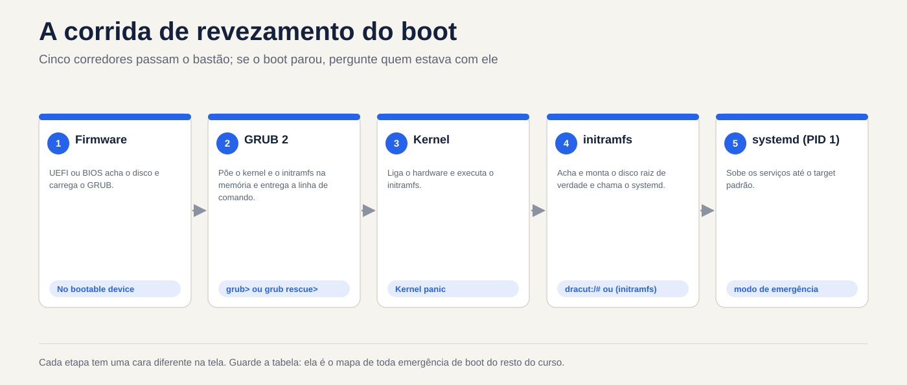
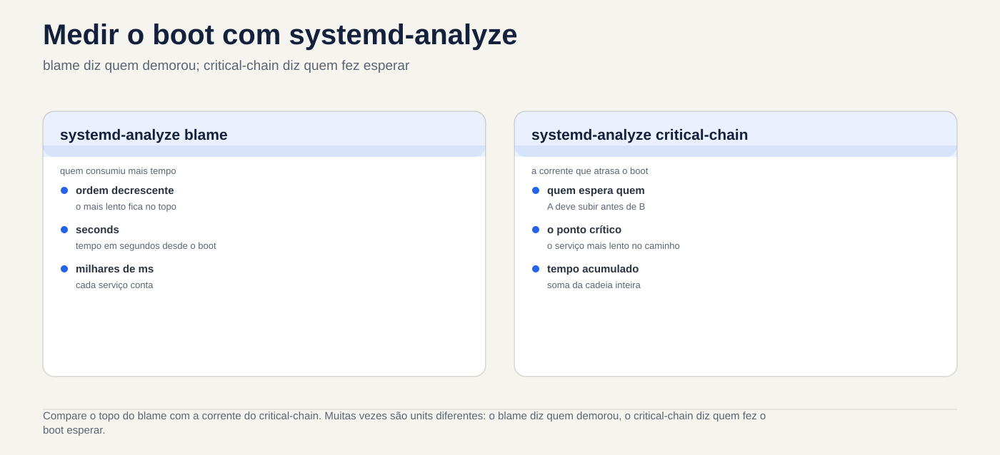

Lezione 4.1 · Come si accende Linux
Finora hai acceso le VM e le hai inserite. Oggi guardate cosa succede nel frattempo: tra la pressione del pulsante e la comparsa di login: cinque programmi si passano il controllo l'uno all'altro. Quando un server non ritorna dopo un riavvio, la prima domanda è sempre in quale di questi cinque passaggi si è fermato e ogni passaggio ha un volto diverso sullo schermo. Chi sa leggere questa faccia può aggiustare il server; Se non lo sai, reinstallalo.
Formato base. Da questa lezione in poi, ogni lezione porta a portata di mano gli elementi essenziali: cosa devi sapere senza Internet, in caso di emergenza, e cosa richiede il test. I dettagli che non sono stati inclusi sono elencati nella sezione 12, affinché tu possa visualizzarli in DeepTutor quando ne hai bisogno.
| File | lezione 4.1 |
|---|---|
| Modulo | M4 · Boot e systemd, lezione 1 di 4 |
| Quando | Settimana 8 |
| Alla fine puoi | Indica le cinque fasi dell'avvio e ciò che ciascuna di esse offre a quella successiva; scoprire se la macchina utilizza UEFI o BIOS; trovare il kernel e initramfs in /boot e la riga di comando del kernel in /proc/cmdline; confermare che il PID 1 è systemd e qual è il target predefinito; leggere l'avvio attuale e precedente con journalctl -b; trovare cosa ha ritardato l'avvio con systemd-analyze |
| Articoli di prova | LPIC-1 101.2 (sequenza di avvio, initramfs, dmesg e journalctl, nozione di SysVinit) · RHCSA (riavvio e arresto; salvataggio del journal tra un riavvio e l'altro) |
| Prerequisiti | lezione 2.3 (processi e journalctl); lezione 3.5 (vim e sudoedit) |
| Tempo | Intorno all'1:30 |
| Istantanee | m4a1-start e m4a1-end in entrambe le VM |
1 · Riscaldamento
Tre domande, appena mi vengono in mente. Scrivi le risposte; la chiave di risposta viene visualizzata alla fine.
- La macchina si accende: appare il logo del produttore, poi un menu con l'elenco dei kernel, poi del testo scorrevole, poi
login:. Indovina: chi mostra il menu e chi mostra il testo scorrevole? - SSH accetta già la vostra connessione, ma
systemd-analyzerisponde che l'avvio non è ancora terminato. Indovina: come potrebbe essere? - Indovina: qual è il numero del processo
systemde perché è giusto?
2 · Perché è importante
| Il cosiddetto | La risposta sbagliata | Cosa succede |
|---|---|---|
| "Il server non è tornato dopo il riavvio" | Ripristina il backup | Senza sapere in quale passaggio si è fermato, non sai cosa risolvere e puoi ripristinare un backup con lo stesso problema. Lo schermo dice il passo: grub>, Kernel panic, dracut:/# o Give root password for maintenance sono quattro problemi diversi |
| "È stato lento risalire dopo l'aggiornamento" | Aspetta e lamentati | systemd-analyze blame mostra in due secondi quale servizio ha effettuato l'avvio |
| "È ripartito da solo all'alba" | Guarda journalctl, che mostra solo l'avvio corrente | Il motivo è nell'avvio precedente, con journalctl -b -1. Se il diario non è persistente, il motivo scompare al riavvio e non lo saprai mai |
| "Ho aggiornato il kernel e non si avvia più" | Reinstallare | GRUB memorizza i kernel precedenti. Scegliendo quello precedente dal menu si mette il server attivo oggi; investighi con calma sulla causa, nella lezione 4.4 |
3 · Modello mentale
Lo stivale è una staffetta con cinque corridori. Ognuno fa una cosa e si passa il testimone: il firmware trova il disco e carica GRUB; GRUB mette in memoria il kernel e initramfs e fornisce la riga di comando; il kernel accende l'hardware ed esegue initramfs; initramfs trova e monta il disco reale e chiama
systemd; systemd aumenta i servizi al target predefinito. Se il boot si fermava, la domanda era sempre la stessa: chi aveva il testimone?
| Passo | Dove vivi | Cosa offre | Se ti fermi qui, vedrai |
|---|---|---|---|
| 1 · Firmware (UEFI o BIOS) | Sulla scheda madre o nella configurazione della VM | GRUB caricato dal disco | Solo il logo, ovvero No bootable device |
| 2 · GRUB2 | /boot/efi (UEFI) e /boot | Kernel e initramfs in memoria, più la riga di comando | Il prompt grub> o grub rescue> |
| 3 · Kernel | /boot/vmlinuz-VERSÃO | Hardware acceso, initramfs in esecuzione | Kernel panic |
| 4 · initramfs | /boot/initramfs-VERSÃO.img (Rocky) o /boot/initrd.img-VERSÃO (Debian) | Il disco root è montato e systemd si chiama | Una shell dracut:/# (Rocky) o (initramfs) (Debian), dopo aver aspettato il disco |
| 5 · systemd, PID 1 | /usr/lib/systemd/systemd | Servizi e target standard | Modalità emergenza: Give root password for maintenance |
Salvare la tabella. È la mappa di ogni emergenza di avvio per il resto del percorso.


4 · Elementi essenziali
UEFI o BIOS
Il firmware è il primo programma da eseguire. Il BIOS, quello vecchio, legge il primo settore del disco ed esegue tutto ciò che c'è. UEFI, quello attuale, memorizza un elenco di voci di avvio nella memoria della scheda (NVRAM) e apre un file .efi in una piccola partizione, in FAT, chiamata ESP, che Linux monta in /boot/efi. In una VM Proxmox, dipende dalla VM: OVMF è UEFI, SeaBIOS è BIOS.
Per scoprire qual è, senza riavviare: se c'è /sys/firmware/efi, il sistema è andato via UEFI.
GRUB 2
GRUB mostra il menu, carica il kernel scelto e initramfs e passa la riga di comando del kernel. Il suo file, grub.cfg, viene generato: non lo si modifica manualmente, perché il successivo aggiornamento del kernel lo riscrive. In Rocky ogni kernel ha una voce in /boot/loader/entries/ e lo strumento è grubby; in Debian si cambia /etc/default/grub ed si esegue update-grub. Entrambe le cose riguardano la lezione 4.4.
Kernel e la riga di comando
Il kernel è un file, /boot/vmlinuz-VERSÃO, e la versione in esecuzione è uname -r. La riga di comando passata da GRUB è in /proc/cmdline. Gli elementi che vedrai sempre:
root=: dove si trova il disco root, per UUID o per nome del volume LVM.ro: il kernel monta il root per sola lettura esystemdlo rimonta per la scrittura dopo il controllo.quiete, in Rocky,rhgb: nasconde il testo di avvio. Rimuoverli dal menu GRUB è il primo passo per vedere dove si blocca l'avvio.
initramfs
Il kernel deve leggere il disco per trovare /, ma il driver del disco, LVM o la crittografia sono sul disco stesso. initramfs risolve questo: è un mini-sistema che GRUB mette in memoria insieme al kernel, con proprio quello che serve per trovare e montare la vera root. Quando riesce, passa il controllo a /sbin/init della radice, che è systemd. Rocky genera initramfs con dracut e Debian con update-initramfs; i due funzionano da soli con ogni nuovo kernel.
Se initramfs non ha il driver giusto, o non trova il disco root=, dopo l'attesa si finisce nella sua shell, o in un Kernel panic che parla di unable to mount root fs.
systemd, il PID 1
Il systemd è il primo processo che il kernel avvia nella radice di true, quindi riceve il numero 1. Tutti gli altri processi discendono da esso e, se muore, il kernel va nel panico. Scala le unità (servizi, assiemi, socket) in parallelo, rispettando le dipendenze, fino a raggiungere il obiettivo standard: un gruppo di unità con un nome, come multi-user.target per il server, o graphical.target con interfaccia grafica.
Prima di systemd, lo standard era SysVinit, con livelli numerati, i runlevel. Il test richiede anche la corrispondenza:
| Livello di esecuzione | Obiettivo | A cosa serve |
|---|---|---|
| 0 | poweroff.target | Disconnetti |
| 1 | rescue.target | Manutenzione, un solo utente |
| 3 | multi-user.target | Server: rete e servizi, senza interfaccia grafica |
| 5 | graphical.target | Il 3 più l'interfaccia grafica |
| 6 | reboot.target | Riavvia |
Leggi boot
journalctl -b: tutto dall'avvio corrente.-b -1è quello precedente,-b -2quello precedente e--list-bootselenca quelli salvati dal journal.journalctl -b -p err: solo errori dell'avvio corrente.journalctl -k, oppuresudo dmesg: solo messaggi del kernel, dove compaiono disco, rete e hardware.- Il journal memorizza solo gli avviamenti precedenti se è persistente, registrato in
/var/log/journal. Se questa cartella non esiste, rimane in/run/log/journal, in memoria, e scompare ad ogni riavvio.
Misurare il boot
systemd-analyze: quanto tempo ha impiegato ciascuna fase.systemd-analyze blame: quanto ha impiegato ciascuna unità, dal più lento al più veloce. Attenzione: le unità funzionano in parallelo, quindi quella più lenta non sempre ritarda l'avvio.systemd-analyze critical-chain: la catena di unità che di fatto ha ritardato il target predefinito. Inizia qui.systemctl is-system-running:running(tutto ok),degraded(qualche unità guasta: vederesystemctl --failed) ostarting(l'avvio non è ancora terminato).
Rocky × Debian
| Roccioso | Debian | |
|---|---|---|
| Configurazione GRUB | /boot/grub2/grub.cfg e /boot/loader/entries/ | /boot/grub/grub.cfg |
| Cambia GRUB | grubby | /etc/default/grub e update-grub |
| initramfs | /boot/initramfs-VERSÃO.img, generato da dracut; il contenuto, con lsinitrd | /boot/initrd.img-VERSÃO, generato da update-initramfs; il contenuto, con lsinitramfs |
| shell initramfs | dracut:/# | (initramfs) |
| Accedi al testo oltre il diario | /var/log/messages, se è installato rsyslog | Nessuno per impostazione predefinita: Debian 12 non installa più rsyslog |
dmesg senza sudo | Di solito funziona | Rifiuto: Operation not permitted |
Controlla le ultime due righe nelle tue VM, in laboratorio. Dipende da cosa è stato installato.
Cosa è incluso nel test
In LPIC-1 101.2: l'ordine dei passaggi; a cosa serve initramfs; dmesg e journalctl per leggere il boot; la corrispondenza tra runlevel e target. In RHCSA: riavviare e arrestare con systemctl reboot e systemctl poweroff e lasciare il journal persistente per salvare gli avvii precedenti.
5 · Laboratorio guidato
Eseguire ogni passaggio su entrambe le VM. I comandi sono gli stessi, tranne dove il passaggio dice Rocky o Debian. Oggi hai appena letto: niente di ciò che esegui finché il passo 4 non cambia il sistema.
Passo 0 · Istantanea e cartella
Sul nodo Proxmox:
qm snapshot 201 m4a1-inicio
qm snapshot 202 m4a1-inicioSu entrambe le VM:
mkdir -p ~/lab41 && cd ~/lab41Passo 1 · Firmware e GRUB
[ -d /sys/firmware/efi ] && echo UEFI || echo BIOS
findmnt /boot/efi
ls /bootSe era UEFI, guarda le voci di avvio della scheda e quale è stato utilizzato ora (BootCurrent):
sudo efibootmgr -vSe avete dato il BIOS, findmnt non mostra nulla e efibootmgr risponde EFI variables are not supported on this system. Entrambe le risposte sono giuste: la tua VM utilizza SeaBIOS.
In Rocky, consulta le voci del menu, una per kernel installato:
sudo ls /boot/loader/entries/Passaggio 2 · Kernel, riga di comando e initramfs
Decidere 1. Prima di eseguire il comando successivo, verificare: root= sulla riga di comando mostrerà
- a) un nome come
/dev/sda2 - b) un
UUID=...o un nome di volume come/dev/mapper/... - c) niente:
root=non appare
uname -r
cat /proc/cmdline| Se hai selezionato | Risultato | Perché |
|---|---|---|
| a | È stato sbagliato, e questo è un bene | Il nome sda deriva dall'ordine in cui il kernel ha trovato i dischi. Cambiare l'ordine, o aggiungere un disco, e sda2 diventa un altro. Nessuno lo installa così oggi |
| b | Capito bene | L'UUID viene scritto nel file system e non cambia. Nemmeno il nome del volume LVM. Lo standard Rocky utilizza LVM (/dev/mapper/rl-root); a Debian, in generale, UUID |
| c | Sbagliato | Senza root=, initramfs non sa quale disco montare. È la prima cosa da controllare quando l'avvio si blocca nella shell initramfs |
Da risolvere: root= usa sempre un nome che non cambia tra un avvio e l'altro.
Ora l'initramfs del kernel in esecuzione e cosa c'è al suo interno:
# Rocky
ls -lh /boot/initramfs-$(uname -r).img
sudo lsinitrd | head -30
# Debian
ls -lh /boot/initrd.img-$(uname -r)
lsinitramfs /boot/initrd.img-$(uname -r) | head -30Notate la dimensione, decine di MB, e il contenuto: un bin, un lib con disco di moduli e, in Rocky, i moduli LVM. È un piccolo sistema, fatto solo per trovare il disco reale.
Passo 3 · PID 1 e target predefinito
Decidi 2. Controlla: /sbin/init, che initramfs chiama alla fine, è
- a) il suo programma, chiamato
init - b) un collegamento al
systemd - c) un file che non è più esiste
ls -l /sbin/init
ps -p 1 -o pid,comm,args
systemctl get-default
systemctl is-system-running
systemctl --failed| Se hai selezionato | Risultato | Perché |
|---|---|---|
| a | Sbagliato | Era così in SysVinit. Oggi il nome era solo per compatibilità |
| b | Capito bene | ls -l mostra la freccia: init -> ../lib/systemd/systemd. In Rocky, /sbin è già un collegamento a /usr/sbin, quindi puoi vedere due salti |
| c | Sbagliato | Il kernel e initramfs cercano ancora /sbin/init per nome. Senza di esso, l'avvio si interrompe con Kernel panic: No working init found |
Da correggere: PID 1 è systemd e /sbin/init è solo il vecchio nome che punta ad esso.
Su un server, get-default dovrebbe rispondere a multi-user.target. Se is-system-running dice degraded, --failed mostra quale unità è guasta: scrivilo nel Diario, perché è il primo vero problema che la VM ti mostra.
Passo 4 · Leggi il boot e salva i successivi
journalctl --list-boots
ls -d /var/log/journalSe --list-boots mostra solo una riga, il boot 0, e ls dice che /var/log/journal non esiste, il diario è in memoria. Lascialo persistente:
sudo mkdir -p /var/log/journal
sudo systemctl restart systemd-journald
ls /var/log/journalAppare una cartella con un nome lungo, l'id della macchina: da ora in poi, il journal scrive su disco. Il modo esplicito, accettato anche da RHCSA, è inserire Storage=persistent nella sezione [Journal] di /etc/systemd/journald.conf e riavviare systemd-journald.
Ora leggi l'avvio corrente:
journalctl -b -p err
journalctl -k | head -20
dmesg | head -5
sudo dmesg | head -5-p err di solito porta alcuni errori non importanti in una VM, come un sensore o un dispositivo che l'hypervisor non ha. Leggere e sapere cosa è normale sulla tua macchina è ciò che ti farà notare cosa è anormale. Notare nella tabella Rocky × Debian nella sezione 4 se dmesg senza sudo ha funzionato in ognuno di essi e se c'è /var/log/messages.
Passo 5 · Misurare avvio e riavvio
systemd-analyze
systemd-analyze blame | head -10
systemd-analyze critical-chainConfrontare la parte superiore di blame con l'attuale di critical-chain. Spesso si tratta di unità diverse: blame dice chi ha preso il tempo e critical-chain dice chi ha fatto attendere l'avvio.
Ora riavvia e controlla che l'avvio precedente sia stato salvato:
sudo systemctl rebootDopo aver inserito nuovamente:
journalctl --list-boots
journalctl -b -1 -n 20L'elenco ora ha almeno due righe e -b -1 -n 20 mostra le ultime 20 righe dell'avvio precedente: lo spegnimento richiesto. È esattamente ciò che leggerai il giorno in cui un server si riavvia da solo.
6 · Interrompi e ripara
L'interruzione: un servizio che mantiene l'avvio per 40 secondi. Creare il file:


sudoedit /etc/systemd/system/lento.service[Unit]
Description=Servico lento de proposito (Aula 4.1)
[Service]
Type=oneshot
ExecStart=/bin/sleep 40
[Install]
WantedBy=multi-user.targetAttiva e riavvia:
sudo systemctl daemon-reload
sudo systemctl enable lento.service
sudo systemctl rebootLa diagnosi. Entra via SSH non appena la VM accetta, senza aspettare, ed esegui:
systemctl is-system-running
systemd-analyze
systemctl list-jobsIl primo risponde starting; la seconda dice che il boot non è ancora terminato; il terzo mostra lento.service in esecuzione e multi-user.target in attesa. Attendi 40 secondi ed esegui di nuovo:
systemctl is-system-running
systemd-analyze blame | head -3
systemd-analyze critical-chainlento.service è sopra blame, con 40 secondi, e nella catena di critical-chain, appena prima di multi-user.target.
La correzione:
sudo systemctl disable lento.service
sudo rm /etc/systemd/system/lento.service
sudo systemctl daemon-reload
sudo systemctl rebootDopo il riavvio, systemd-analyze ritorna al tempo precedente e systemctl status lento.service risponde che l'unità non esiste.
La lezione. SSH ti ha accettato prima del completamento dell'avvio, perché sshd non dipende da lento.service: systemd carica le unità in parallelo. Quindi "ora posso accedere" non significa "l'avvio è terminato". È is-system-running che lo dice. E il percorso diagnostico è sempre lo stesso: is-system-running per sapere se è finito, critical-chain per sapere chi lo ha tenuto, blame per vedere quanto.
7 · Insidie
- Modifica
grub.cfga mano. Funziona fino al successivo aggiornamento del kernel, che riscrive il file. Le modifiche in GRUB sono congrubbyo/etc/default/grubeupdate-grub, nella lezione 4.4. - Affidarsi a
journalctl -b -1senza journal persistente. La risposta è che l'avvio non esiste e il motivo del riavvio è scomparso. Controlla--list-bootssu ogni nuovo server che ricevi. - Leggi
blamecome se fosse una coda. Le unità funzionano in parallelo. Il più lento potrebbe non aver ritardato nulla. Chi era in ritardo è incritical-chain. - Pensare che l'accettazione SSH sia la fine dell'avvio. Questo è ciò che ha mostrato la pausa.
is-system-runningrisponde effettivamente. - Dimentica
daemon-reload. Dopo aver creato o modificato un file unit,systemdutilizza ancora la vecchia versione e richiedeRun 'systemctl daemon-reload' to reload units. Leggi gli avvisi. - Esegui
efibootmgrsu una macchina con BIOS e pensi che sia rotto. Il messaggioEFI variables are not supportedsignifica semplicemente che la macchina non è UEFI. - Elimina i vecchi kernel per liberare
/boot. Il kernel precedente è la tua via d'uscita quando quello nuovo non viene disponibile. I gestori dei pacchetti ne memorizzano già alcuni di proposito; lascia che se ne occupino loro.
8 · Quiz
Rispondi senza guardare le sezioni precedenti. La chiave di risposta commentata si trova alla fine.
- Metti in ordine: kernel,
systemd, firmware, initramfs, GRUB. - Dopo un minuto di arresto, l'avvio passa al prompt
dracut:/#. Quale passo è fallito e chi è il principale sospettato? - Un server riavviato nelle prime ore del mattino. Esegui
journalctl -b -1e la risposta è che questo avvio non esiste. Cosa dice questo sul server e cosa farai la prossima volta? - La parte superiore di
systemd-analyze blameè unexemplo.servicedi 12 secondi, ma non appare insystemd-analyze critical-chain. Ha ritardato l'avvio? - A quali target corrispondono i runlevel 3 e 5? Con quale comando vedi il target predefinito?
- Quale file mostra la riga di comando del kernel con cui è stato avviato il sistema in esecuzione? a)
/etc/default/grubb)/proc/cmdlinec)/boot/grub2/grub.cfgd)/etc/fstab
9 · Cola
Da conoscere a memoria
La staffetta, con il cartello di ogni tappa quando si ferma:
- Firmware (UEFI o BIOS):
No bootable device - GRUB:
grub>ogrub rescue> - Kernel:
Kernel panic - initramfs:
dracut:/#o(initramfs) - systemd:
Give root password for maintenance
E i comandi che usi senza interrogare:
cat /proc/cmdline # cosa GRUB ha passato al kernel
systemctl get-default # l'obiettivo predefinito
systemctl is-system-running # in funzione, degradato o avviato
systemctl --failed # che hanno fallito
journalctl -b -p err # errori di avvio correnti
journalctl -b -1 # l'avvio precedente
journalctl --list-boots # quanti stivali conservava il diario
systemd-analyze critical-chain # che teneva lo stivalePer interrogare
| A | Roccioso | Debian |
|---|---|---|
| Verifica se è UEFI | [ -d /sys/firmware/efi ] | Lo stesso |
| Voci di avvio della scheda (UEFI) | sudo efibootmgr -v | Lo stesso |
| Voci del menu GRUB | /boot/loader/entries/ | /boot/grub/grub.cfg (sola lettura) |
| contenuto initramfs | sudo lsinitrd | lsinitramfs /boot/initrd.img-$(uname -r) |
| Messaggi del kernel | journalctl -k o dmesg | journalctl -k o sudo dmesg |
| Diario persistente | mkdir -p /var/log/journal e riavviare systemd-journald | Lo stesso |
| Tempo per ogni unità | systemd-analyze blame | Lo stesso |
Flashcards
- A cosa serve initramfs? → Trova e monta il disco di root, con i driver che il kernel non ha ancora, e chiama
systemd. - Dov'è la riga di comando utilizzata nell'avvio corrente? →
/proc/cmdline. - Qual è il PID di
systemde perché? → 1: è il primo processo che il kernel avvia nella root vera e propria. degradedinis-system-runningintendi? → Si è attivato, ma qualche unità è guasta: vederesystemctl --failed.blameocritical-chainper sapere chi è in ritardo? →critical-chain.- Perché a volte il giornale non ha l'avvio precedente? → È in
/run/log/journal, in memoria, perché/var/log/journalnon esiste. - Runlevel 3 e 5? →
multi-user.targetegraphical.target.
10 · Uscire dalla lista di controllo
- [ ] Dico i cinque passaggi in ordine e cosa ciascuno di essi fornisce al successivo.
- [ ] So se ogni VM è stata caricata tramite UEFI o BIOS e come l'ho scoperto.
- [ ] Ho trovato il kernel e initramfs in
/boote ho lettoroot=in/proc/cmdline. - [ ] Ho mostrato che il PID 1 è
systemde che il target predefinito èmulti-user.target. - [ ] Il journal delle due VM è persistente e
--list-bootsmostra più di un avvio. - [ ] Ho trovato
lento.serviceconis-system-running,critical-chaineblamee l'ho rimosso. - [ ] Ho compilato entrambe le righe della tabella Rocky × Debian che dipendevano dalle mie VM.
Ultimo esercizio, senza guardare. Su un foglio di carta, scrivi i cinque passaggi e, accanto a ciascuno, un comando o un file che dimostri che è stato eseguito all'avvio corrente. Quindi controlla le VM.
Riavvio e conferenza. Riavvia le due VM e controlla:
journalctl --list-boots | tail -3
systemctl status lento.service
systemctl is-system-runningUn altro avvio nell'elenco; l'unità lento.service non esiste; il sistema running o degraded con lo stesso motivo annotato nel passaggio 3.
Termina snapshot, sul nodo Proxmox:
qm snapshot 201 m4a1-fim
qm snapshot 202 m4a1-fim11 · Nella vita reale
Missione, sola lettura. Su un server Linux reale a cui rispondi, esegui comandi di sola lettura:
[ -d /sys/firmware/efi ] && echo UEFI || echo BIOS
systemd-analyze
journalctl --list-boots | tail -5
systemctl --failedNon modificare nulla su di esso. Se il diario non è persistente, o se ci sono unità guaste, annotalo e portalo nella tua lista di miglioramenti, per decidere con calma e con una finestra di manutenzione.
Diario. Nota: cosa ha risposto ciascuna VM in is-system-running; il tempo di avvio di ciascuno; cosa ha mostrato il server reale; e una frase con le tue parole sulla differenza tra blame e critical-chain.
Domani, senza guardare:
- Qual è il passaggio che monta il disco root?
- Quale comando mostra l'avvio precedente?
- SSH è presente. L'avvio è terminato?
12 · Approfondisci quando vuoi
Sono stati lasciati fuori di proposito. Usalo quando ne hai bisogno o quando ti colpisce la curiosità:
- Secure Boot:
shime le chiavi che consentono al firmware di fidarsi di GRUB e del kernel. - MBR e GPT: come il BIOS e UEFI trovano il caricatore sul disco e qual è la partizione di avvio del BIOS.
- Generare nuovamente l'initramfs:
dracut -feupdate-initramfs -u, e quando necessario. - Parametri del kernel per emergenza:
systemd.unit=,rd.breakeinit=. Entra nella lezione 4.4. - SysVinit e Upstart: gli script in
/etc/init.de i runlevel. LPIC ti chiede di riconoscere. - Avvio grafico:
systemd-analyze plot > boot.svg. - Limiti giornale:
SystemMaxUse=injournald.conf, quindi il giornale non riempie il disco.
In DeepTutor:
!explica initramfs: por que ele existe e o que tem dentro!feynman as cinco etapas do boot(spiega, corregge)!quiz LPIC 101.2, 5 perguntas
Risposta commentata
Riscaldamento
- Il menu è di GRUB. Il testo scorrevole proviene da kernel e poi da systemd. Il logo soprattutto proviene dal firmware.
systemdsolleva le unità in parallelo.sshdè già in volo mentre un'altra unità tiene ancora il bersaglio standard. Si è trattato esattamente della violazione dell'articolo 6.- 1: è il primo processo che il kernel avvia nella root reale. Gli altri discendono da lui.
Quiz
- Firmware, GRUB, kernel, initramfs,
systemd. GRUB carica insieme il kernel e initramfs, ma il kernel viene eseguito per primo ed esegue initramfs. - initramfs: non ha trovato il disco di root. Il primo sospetto è la riga di comando
root=che punta a un UUID o a un volume che non esiste, ad esempio dopo uno scambio di disco o un volume rinominato. Il secondo è un driver mancante in initramfs. - Il journal di questo server non è persistente e il motivo del riavvio è andato perso. La prossima volta: crea
/var/log/journale riavviasystemd-journald, oppureStorage=persistentinjournald.conf. Se c'è/var/log/messages, potrebbe avere qualche indizio. - Probabilmente no. Ci è voluto un po', ma in parallelo, e il target predefinito non l'ha aspettato. Chi ha ritardato l'avvio è quello in
critical-chain. - 3 è
multi-user.targete 5 ègraphical.target. Il comando èsystemctl get-default. - B).
/etc/default/grubegrub.cfgindicano cosa verrà utilizzato al prossimo avvio e qualcuno potrebbe averlo modificato in seguito./proc/cmdlinemostra cosa è stato utilizzato nell'avvio corrente./etc/fstabnon ha nulla a che fare con la riga di comando.